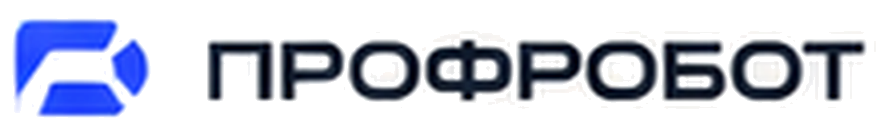
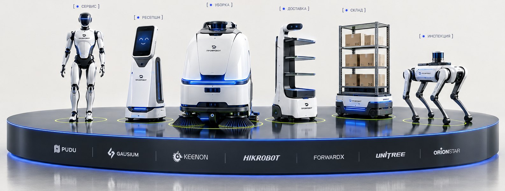

01Персонал
Не хватает персонала
Линейных сотрудников всё сложнее найти и дороже удерживать. Робот забирает рутину и снижает зависимость от текучки.

СвязатьсяВнедряем роботов, которые снижают затраты до 30%, закрывают дефицит персонала и держат качество стабильным. Окупаемость считаем до вложений.

Начните с задачи. Решение подберём под неё, а не наоборот.
Шесть шагов от аудита до сервиса по SLA. На каждом вы видите цифры.
* Диапазоны рассчитываются на аудите под конкретный объект.
Под каждую отрасль — свой лендинг со сценариями, оборудованием и расчётом.
ПРОФРОБОТ Cleaning Operations Platform: парк устройств, качество, отчёты и оповещения. Не «робот-одиночка», а управляемая система.
Рассчитаем ROI и подготовим предложение. Без обязательств: сначала цифры, потом решение.
или +7 (495) 123-45-67 · info@profrobot.ru